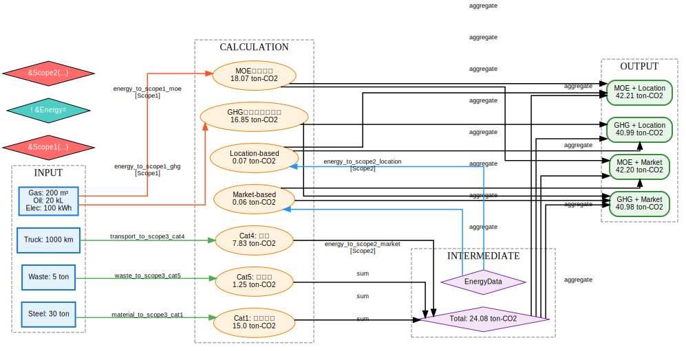
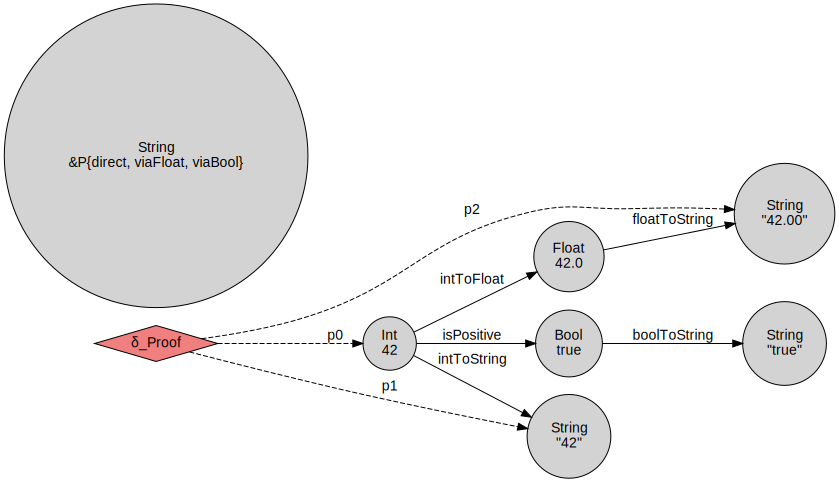

プロジェクト概要
このプロジェクトは、Interaction Calculus（相互作用計算）の理論を応用し、 工場の生産管理データからGHG（温室効果ガス）レポートを生成するプロセスを、 Interaction NETとして可視化します。
テストケース
25/25
すべて成功 ✅
レポートパターン
4
自動生成
ノード数
20+
GHGネット
Python版
3.8+
対応
主な機能
Superposition（重ね合わせ）
複数の計算方法を同時に保持
- MOE係数 vs GHGプロトコル
- Location-based vs Market-based
- 4パターンのレポート自動生成
Duplication（複製）
データの効率的な共有
- エネルギーデータの再利用
- 計算コストの最適化
- メモリ効率の向上
Type Inhabitation
型探索による証明
- パス探索アルゴリズム
- 複数の証明を発見
- 監査証跡の生成
GHGレポート生成ネットワーク
入力データ (Input)
計算ノード (Calculation)
中間データ (Intermediate)
出力レポート (Output)

計算フロー
エネルギーデータは複製され、Scope1（直接排出）とScope2（間接排出）の 両方の計算に使用されます。各スコープでは、重ね合わせにより 複数の計算方法（MOE係数/GHGプロトコル係数、Location-based/Market-based）を 同時に保持し、最終的に4パターンのレポートを生成します。
Type Inhabitation デモ

探索された証明（パス）
- 証明1 (直接): Int → String (intToString)
- 証明2 (Float経由): Int → Float → String
- 証明3 (Bool経由): Int → Bool → String
理論的背景
Interaction Combinators (Lafont 1997)
| 要素 | 記号 | 説明 | IC対応 |
|---|---|---|---|
| Constructor | γ | ラムダ抽象、データ構築 | λx.body |
| Duplicator | δ | 複製、重ね合わせ | ! x &L= v; t, &L{a,b} |
| Eraser | ε | 消去 | &{} |
Type Inhabitation
Type Inhabitationは、「ある型の値を構築する方法を探す」問題です。 これは、型理論における証明探索と対応しています。
# 型（ノード）とパス（証明） 型: EnergyData → Scope1Data → GHGReport パス: energy_to_scope1_moe ∘ aggregate # Superpositionによる複数の証明 &Scope1{ energy_to_scope1_moe, # 証明1: 日本環境省係数 energy_to_scope1_ghg # 証明2: GHGプロトコル係数 } # Duplicationによる証明の再利用 ! proof &L= <shortest_path>; ((proof₀ 42), (proof₁ 100))
実用的な価値
| 課題 | Interaction NET的解決 |
|---|---|
| 複数の排出係数で試算したい | Superposition で全パターン同時計算 |
| 計算の監査証跡が必要 | パス（変換関数の列）が証跡になる |
| 中間計算を再利用したい | Duplication でデータ共有 |
| スコープ別に分けて管理 | Labels で区別・対応付け |
| 計算方法の違いを比較 | Superposition展開で差分可視化 |
実装例
基本的な使用方法
from interaction_net import InteractionNet # ネットワーク作成 net = InteractionNet("MyNet") # ノード追加 net.add_node("input", "Int", "42", category="data") net.add_node("output", "String", category="result") # エッジ追加（変換関数） net.add_edge("input", "output", function="toString") # 可視化 dot = net.to_dot() print(dot)
GHGネットワークの構築
from ghg_net_visualizer import GHGInteractionNet # GHG特化のネットワーク作成 ghg_net = GHGInteractionNet() # スタイル付きDOT形式で出力 dot = ghg_net.to_dot_styled() # SVG生成 import subprocess subprocess.run(["dot", "-Tsvg", "ghg_net.dot", "-o", "ghg_net.svg"])
パス探索（Type Inhabitation）
# パスの探索 paths = net.find_paths("energy_input", "scope1_moe") for i, path in enumerate(paths, 1): print(f"パス {i}:") for edge in path: print(f" {edge.source.id} --[{edge.function}]--> {edge.target.id}")
テスト実行
# すべてのテストを実行 python test_interaction_net.py # 出力: # Tests run: 25 # Successes: 25 # Failures: 0 # ✓ All tests passed!
ファイル構成
interaction-net-ghg/ ├── interaction_net.py # Interaction NETの基本実装 ├── ghg_net_visualizer.py # GHG特化の可視化 ├── test_interaction_net.py # テストスイート（25テスト） ├── INTERACTION_NET_GUIDE.md # 詳細ガイド ├── README_INTERACTION_NET.md # README └── outputs/ ├── ghg_net.svg # GHGネット可視化（SVG） ├── ghg_net.dot # DOT形式 ├── ghg_net.json # JSON形式 └── type_inhabitation.svg # Type Inhabitationデモ